Personagens
Explore os personagens mais icônicos do universo de My Hero Academia. Passe o mouse para ver a imagem em corpo inteiro!
Alunos U.A.
Conheça alguns dos alunos mais destacados da U.A. High School, a prestigiada escola de heróis onde jovens treinam para se tornarem os próximos grandes heróis profissionais.

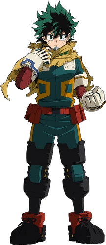
Izuku Midoriya
Também conhecido como Deku, nono usuário do One For All. Nascido originalmente sem quirk.

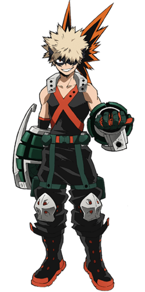
Katsuki Bakugo
Seu quirk Explosion o torna brutalmente poderoso. Temperamento forte e talento absurdo. Focado em ser o número um.

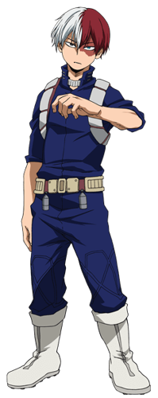
Shoto Todoroki
Meio quente, meio frio. Filho do novo herói número um, Endeavor. Um dos alunos mais promissores da U.A.

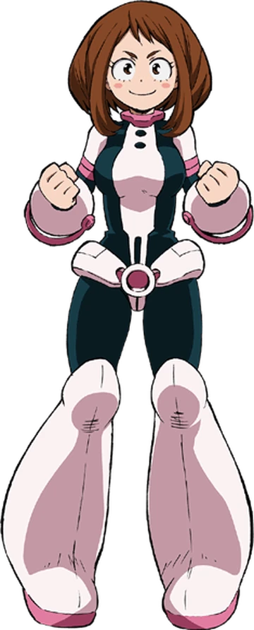
Ochaco Uraraka
Sua quirk permite anular a gravidade de qualquer objeto que toque.

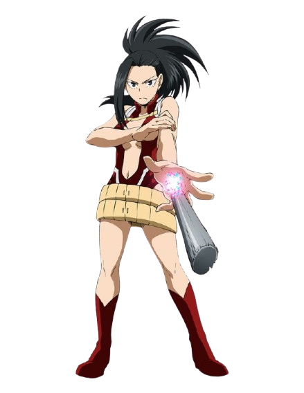
Momo Yaoyorozu
Sua quirk permite criar qualquer objeto inorgânico a partir de sua gordura corporal. Extremamente inteligente e estrategista nata.

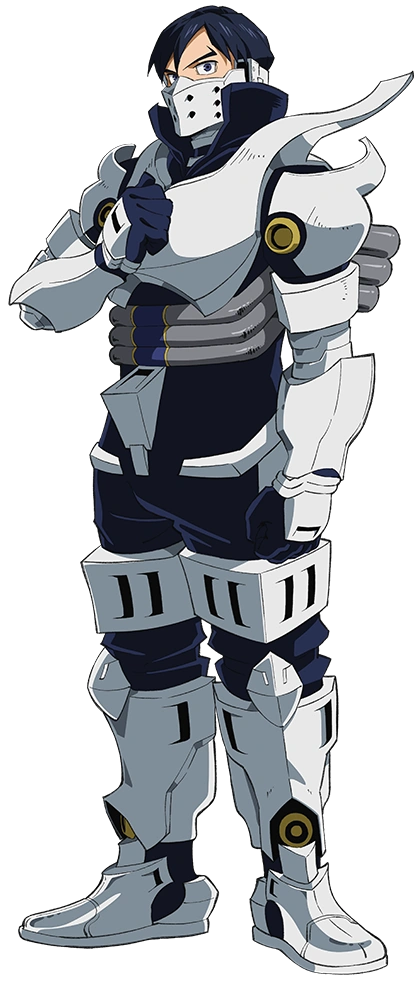
Tenya Iida
Conhecido por sua velocidade incrível graças ao seu quirk Engine. Dedicado, é o representante de turma da Classe 1-A.
Heróis Profissionais
Conheça alguns dos heróis profissionais mais renomados do universo de My Hero Academia. Esses heróis dedicam suas vidas a proteger a sociedade e combater o mal.

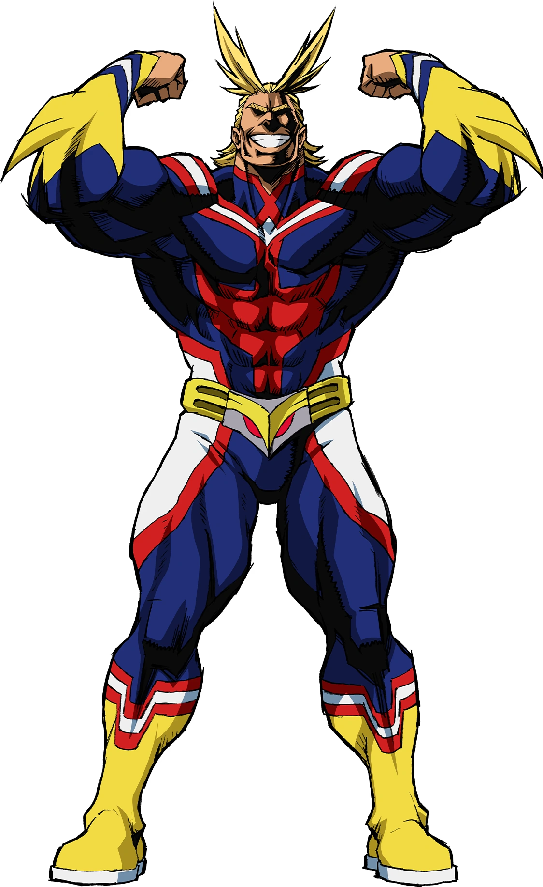
All Might
O Símbolo da Paz e o herói número um por décadas. Seu quirk One For All é passado de geração em geração.
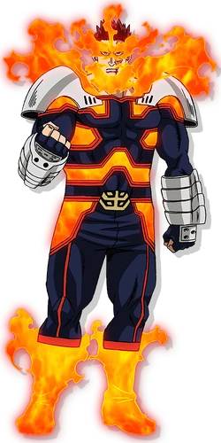
Endeavor
Sua quirk Hellflame o torna brutalmente poderoso. Ambicioso e determinado, é o herói número um atualmente.

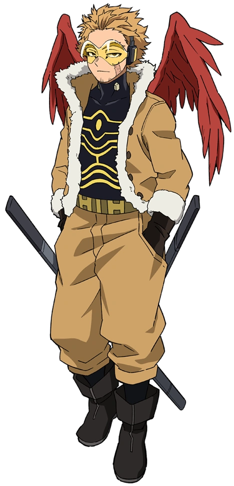
Hawks
Seu quirk Fierce Wings lhe concede asas poderosas. Rápido e astuto, é o herói número dois atualmente.

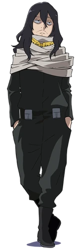
Eraser Head
Seu quirk Erasure lhe permite anular os poderes dos outros. Professor responsável pela 1.A.
Vilões
Conheça alguns dos heróis profissionais mais renomados do universo de My Hero Academia. Esses heróis dedicam suas vidas a proteger a sociedade e combater o mal.

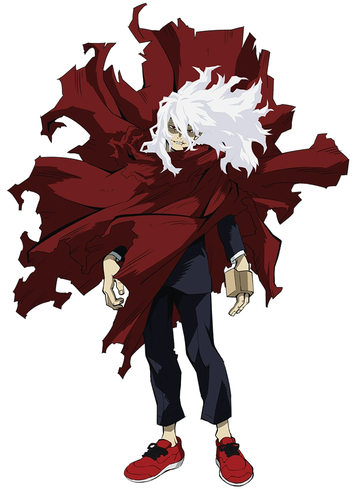
Tomura Shigaraki
Líder da Liga dos Vilões. Seu quirk Decay destrói tudo o que toca. Obcecado em destruir a sociedade de heróis.

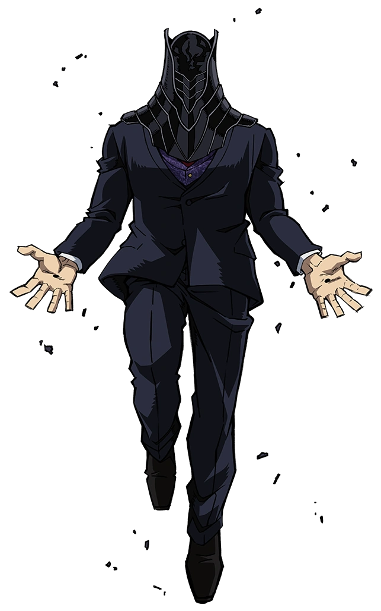
All For One
O maior vilão de todos os tempos. Seu quirk permite roubar e usar múltiplos quirks. Mentor de Shigaraki.

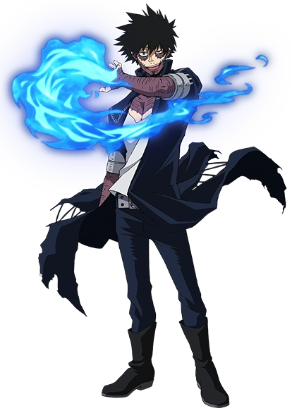
Dabi
Membro da Liga dos Vilões. Seu quirk Blueflame gera chamas azuis extremamente quentes. Vilão frio e calculista.

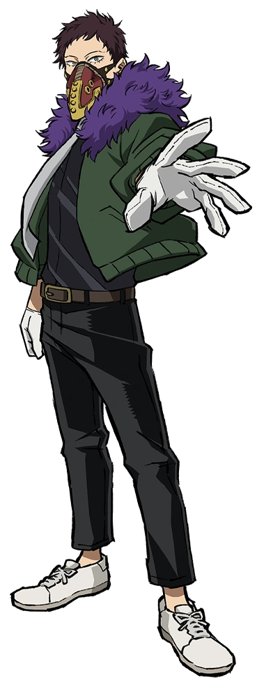
Overhaul
Líder da gangue Shie Hassaikai. Seu quirk permite desintegrar e reconstruir matéria. Vilão implacável e perigoso.